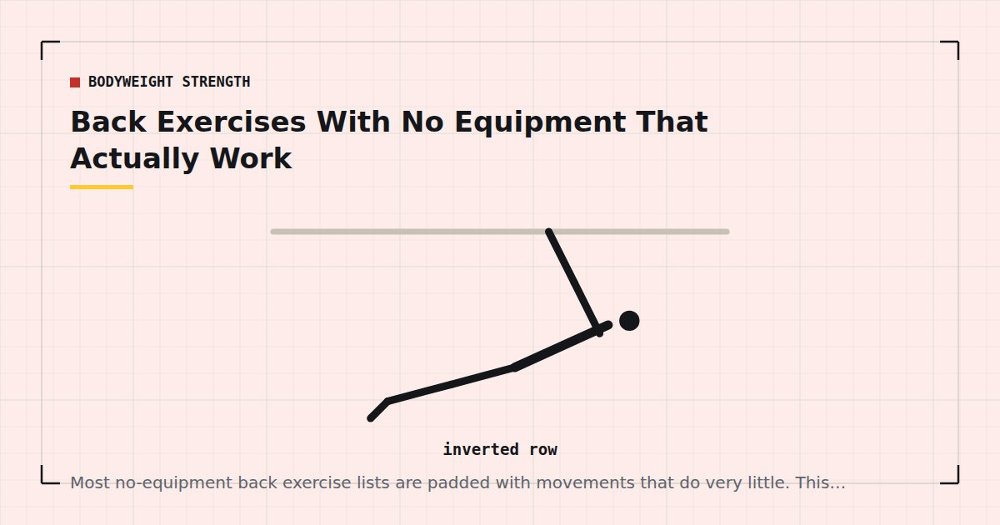

Bodyweight Strength
Back Exercises With No Equipment That Actually Work
Most no-equipment back exercise lists are padded with movements that do very little. This one separates what works from what is there to make the list longer.

Training the back with genuinely no equipment is the hardest problem in home training, and most articles on the subject solve it by listing exercises that do not work.
The reason is mechanical. Back muscles work by pulling, and pulling requires resistance to pull against. Your own bodyweight can be arranged to provide resistance for pushing — that is what a push-up is — but there is no equivalent arrangement for pulling that uses nothing but the floor.
The honest starting point
If you have absolutely nothing — no bar, no bands, no table, no suitable door — you can train the back somewhat, but not well. You can meaningfully train the mid and lower trapezius, the rear deltoids and the spinal erectors. You cannot meaningfully train the lats, which are the largest muscle of the back.
That is worth knowing before you spend six months on a routine that cannot deliver what you want from it. Adult guidance asks for strengthening work across all major muscle groups,1 and the back is one of them, so this is a gap worth closing properly rather than working around.
What actually works
Prone Y-T-W raises
Lie face down, arms overhead in a Y, and lift them along with your chest, squeezing the shoulder blades. Repeat with arms in a T, then bent into a W. Ten to fifteen of each shape.
This is the best genuinely equipment-free back exercise. It directly trains the mid and lower trapezius and rear deltoids, which are exactly the muscles a desk-bound day under-uses.
Superman hold
Face down, lift arms, chest and legs off the floor simultaneously and hold for ten to twenty seconds. Trains the spinal erectors and the posterior chain isometrically.
Modest, but real. Three sets is a reasonable dose.
Reverse snow angel
Face down, arms at your sides, palms down. Lift the arms slightly and sweep them out and overhead along the floor without letting them touch, then back. Slow and deliberate, ten to fifteen repetitions.
Better than it looks. The long lever and the constant tension make it surprisingly demanding through the upper back.
Floor pull-through
Lie face down with arms extended overhead. Pull your elbows down and back toward your ribs, dragging your hands along the floor with real pressure, then extend again. The friction of your hands against the carpet provides the resistance.
Genuinely trains the lats a little, which puts it ahead of most exercises on any equipment-free list. A carpet or rug works far better than a hard floor.
What partially works
Door frame rows
Not strictly equipment-free, but requires nothing you would have to buy. Grip both sides of an open door frame at chest height, feet close to the door, and lean back with straight arms, then pull yourself upright. The range is short but the resistance is real, and it does train the lats.
Use the frame, not the door. This and six other options are covered in rows at home.
Towel rows
A towel around a sturdy door handle, leaning back and rowing yourself upright. Again, not equipment as such, since everyone owns a towel. Substantially better than any floor exercise.
Isometric towel pulls
Hold a towel with both hands and pull outward against it as hard as you can for ten seconds, in various positions. Isometric training does produce strength adaptations, though they tend to be somewhat specific to the joint angle trained.
Worth including if you have nothing else, without expecting much size change from it.
What does not really work
Three exercises that appear on almost every list and do very little:
“Bodyweight rows” performed lying on the floor with no bar. Miming a row against no resistance trains almost nothing. Muscle adapts to mechanical tension, and there is none here.
Swimmers. Alternating small arm and leg lifts while face down. Pleasant, gentle, close to zero training stimulus for anyone healthy. Reasonable as a warm-up.
Arm circles for the back. A warm-up movement, not a back exercise.
I include these not to be dismissive but because listing them alongside real exercises implies a rough equivalence that does not exist, and someone following such a list will train for months and wonder why nothing changed.
There is no way to properly train your lats with nothing at all. A towel and a door handle changes that, and costs nothing.
A no-equipment back session
If you genuinely have nothing beyond a floor:
- Prone Y-T-W raises — 3 × 10 of each shape
- Floor pull-through — 3 × 12–15
- Reverse snow angel — 3 × 12–15
- Superman hold — 3 × 15–20 seconds
Two or three times a week. Since the loads are light, proximity to failure is what produces adaptation,2 so these should be taken close to the point where form breaks rather than stopped at a round number.
If you have a door and a towel, replace the first two with three or four sets of towel rows and the session becomes several times more effective.
The cheapest way to fix this properly
A set of resistance bands costs less than a month of most gym memberships and completely solves this problem. Anchored in a door hinge, they cover rows, pulldowns and face pulls with genuine progressive resistance. Details in the resistance bands guide.
A doorway pull-up bar is the other answer, and it opens the door to pull-ups as well — the route is in how to do your first pull-up at home, and the fitting and safety considerations in the doorway pull-up bar guide.
Of all the equipment decisions in home training, this is the one I would make first. Everything else can genuinely be done with the floor and some furniture — the case is set out in the minimalist home gym guide.
Where to go next
For the full set of rowing options using furniture you already own, see rows at home. For where back work fits in a week, use the three-day split.
Frequently asked questions
Can you train your back with no equipment at all?
Partially. You can meaningfully train the mid and lower trapezius, rear deltoids and spinal erectors with floor exercises. You cannot meaningfully train the lats, which are the largest back muscle, because that requires something to pull against.
What is the best back exercise with no equipment?
Prone Y-T-W raises, performed lying face down and lifting the arms in three different shapes. They directly train the muscles that a desk-bound day under-uses. The floor pull-through, dragging the hands along a carpet, is the only floor exercise that involves the lats at all.
Do superman exercises build back muscle?
They train the spinal erectors isometrically and are genuinely useful, but modest. They do not train the lats or produce much size change. Treat them as one part of a session rather than the whole of it.
Are bodyweight rows without a bar effective?
Miming a rowing motion against no resistance does very little, because muscle adapts to mechanical tension and there is none. Rows against a door frame, a towel on a handle, or under a table are a completely different proposition and do work.
What should I buy to train my back at home?
Resistance bands first — anchored in a door hinge they cover rows, pulldowns and face pulls with genuine progressive resistance for very little money. A doorway pull-up bar is the other strong option and opens the way to pull-ups.
How often should I train back at home?
Two or three times a week, matching or exceeding your pressing volume. Home routines are typically heavy on pushing and light on pulling, which is the most common imbalance in home training.
Sources and further reading
- World Health Organization. WHO Guidelines on Physical Activity and Sedentary Behaviour. 2020.
- Schoenfeld BJ, Grgic J, Ogborn D, Krieger JW. “Strength and Hypertrophy Adaptations Between Low- vs. High-Load Resistance Training: A Systematic Review and Meta-analysis.” Journal of Strength and Conditioning Research, 2017;31(12):3508–3523. PubMed.
- Schoenfeld BJ, Ogborn D, Krieger JW. “Dose-response relationship between weekly resistance training volume and increases in muscle mass: A systematic review and meta-analysis.” Journal of Sports Sciences, 2017;35(11):1073–1082. PubMed.
- NHS. Strength and Flex exercise plan.
Comments
Comments are not enabled yet. Add a hosted comment embed (Disqus, Commento, Giscus) inside this container when you are ready.